Contents
Documentation built with Unreal-Doc v1.0.9 tool by PsichiX
Book
This book provides the necessary documentation to setup and use the Paint 2 Blocking plugin.
/!\ The links under apparently don't work, I'm trying to figure it out, please use the links on the left
Pages
Documentation built with Unreal-Doc v1.0.9 tool by PsichiX
Getting Started
Table of Contents
Paint 2 Blocking
The Paint 2 Blocking plugin is a tool designed for fast gameplay layout iteration. Its primary purpose is to generate 3D Blockers from
textures. These textures can be easily modified using the Paint Mode provided with the plugin.
The plugin functions similarly to a classic drawing application, featuring multiple layers that can be shown or hidden. Each layer is drawable and includes an undo function to cancel modifications.
This system is highly flexible, allowing users to override the generated Blockers. Anything can be spawned from a color shape drawn on the
textures. However, due to texture limitations, unique data cannot be assigned per instance, meaning individual rotations for instanced objects
are not currently supported. This limitation may be addressed in future updates.
Features
The plugin comes with a few core features, but its ability to be tweaked makes it highly powerful.
3D Generation
The plugin extracts vertices from a single-color shape on a texture to generate a Geometry. The standard approach generates a Vertex for
each edge pixel of the shape, which is then simplified using various algorithms.
Once the geometries are extracted, the 3D generation begins, and Blockers are spawned. Their world position is calculated as the average position
of all vertices, and their 3D shape is created by extruding the vertices.
To improve efficiency, users can spawn an Actor that inherits from a Blocker Interface instead of generating a standard Blocker. These actors
are positioned at the center of the Vertices and function the same way. For example, you can create a Player Start blocking actor that spawns
based on a specific color, allowing for rapid iteration, even with logical engine elements, when designing a new map.
Parametric Generation
Generation is controlled using Data Asset files. There are two types:
Blocker Generation: is where you will register the colors and bind aBlockersto them. You must provide aBlocker Dataclass used during spawning and specify the correspondingBlockerclass that reads the data. Each data class has different configurable settings.Template Generation: Gether a list ofBlocker Generationdata assets and defines whichBlockerswill be generated.
Custom Blockers
The system is designed to be highly flexible, allowing users to spawn anything with custom settings. Two main classes enable this:
Blocker Data: The defaultUP2B_BlockerDataclass in the plugin may not include all necessary configuration options. For example, you might need to adjust lighting settings or introduce custom values for spawnedBlockers. By overriding this class, you can add any necessary parameters. This data is constant, meaning allBlockersgenerated from the same color will share the same settings.Blocker: To correctly read custom data, you must either overrideAP2B_Blockeror implement theIP2B_Blocker_Interfacewhen using a customActor. These classes function similarly and provide useful methods that are called when aBlockeris instantiated. These functions allow you to use the associatedBlocker Datato initialize custom settings.
Painting Tool
You can activate the painting tool at any time in the editor by selecting Paint 2 Blocking from the dropdown menu in the top-left corner. This will open
a window similar to Unreal Engine's painting tool but with a custom UI.
The UI is generated based on the Data Asset linked to the selected Blocker Generator. Using this tool, you can:
- Generate & delete
Blockers - Select preset colors for the paintbrush
- Add new drawing layers
FOW P2B Bridge
The Paint 2 Blocking plugin is primarily designed to work alongside the Layered Fog of War (FOW). Setting up fog custom colliders can be time-consuming,
so a faster system was needed.
The FOW P2B Bridge is a free plugin that depends on both Paint 2 Blocking and FOW. It provides Blockers and Blocker Data classes that allow you to
generate collisions, stealth areas, and visual elements from color shapes. The bridge is setup to be used with the MOBA template from the FOW plugin which is
designed for online games.
Documentation built with Unreal-Doc v1.0.9 tool by PsichiX
Tutorials
Here we will showcase the step-by-step process of basic usage of the Layered Fog Of War - both for C++ and Blueprint
implementation. If you want to be in the same condition as the pictures are, you can download my
Demo Project and use the map in the tutorial folder.
If you need help installing the plugin, you can watch this Video.
/!\ The links under apparently don't work, I'm trying to figure it out, please use the links on the left
Pages
Documentation built with Unreal-Doc v1.0.9 tool by PsichiX
First set up
Table of Contents
Installation
The plugin has to be installed in the UE_5.5\Engine\Plugins\Marketplace folder in your engine or in the Plugins folder in your project.
This is a standalone plugin, but if you are using the Layered Fog of War plugin, I recommend also installing the FOW_P2B_Bridge in the same folder.
You can then start up your project and enable the Plugins from the editor, or you can edit the YourProject.uproject file directly.
"Plugins": [
{
"Name": "FogOfWar",
"Enabled" : true,
},
{
"Name": "Paint2Blocking",
"Enabled" : true,
},
{
"Name": "FOW_P2B_Bridge",
"Enabled" : true,
}
]
Set up and Usage
Let's get straight to the first Blockers generation. For that, you will have to drag and drop the BP_P2B_BlockerGenerator from the plugin content into
your scene. The default generator is set up with a default texture and a Template data asset that will generate Blockers from any color. You can see
in the details panel a few settings values and three buttons used for the editor actions. You can change the size of the generation plane by tweaking the
Plane Size value from the Details panel.
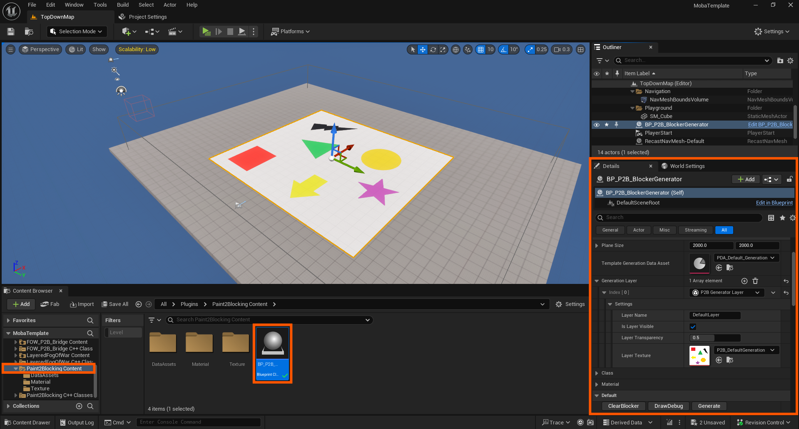
Once the Generator is in your scene, you can now generate the Blockers by hitting the Generate button! You can also delete everything by hitting the
Clear blockers button. The Draw Debug will draw small debug spheres where the geometry vertices are.
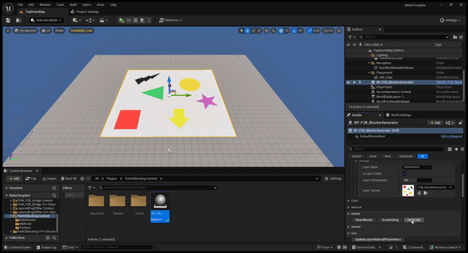
Now that the generation is working, let's paint and create some custom shapes!
- First, open up the
Paint2Blocking Mode - Select the
Blocker Generator - Go to the
Paintingtool - In the layers, click on the dropdown arrow and delete it
- Then add a new layer, give it a name, and create it
You will have a new texture asset created in a new folder: Content/GenerationTextures. During the texture creation, you can modify the creation folder if it
doesn't suit you.

Now that the new layer is set up, you can change its size if needed in the BP_P2B_BlockerGenerator details panel and then start drawing.
- Select a color
- Draw any shape
- Hit the generate blockers button
Note that you can automatically generate drawers by turning on
Enable Dynamic Blocker Generation!
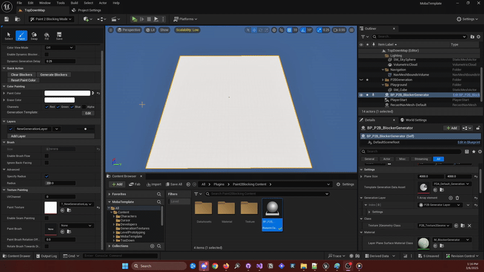
And that will be all for the default setup. Generated blockers will have default collision presets and will update the pathfinding if one is set up.
You can add any number of Layers, but you will have to select it before painting; otherwise, the first one will be used.
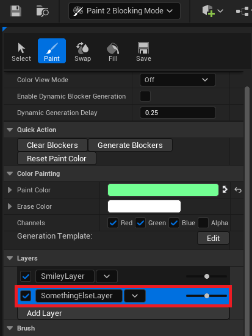
Going further
You might want to use a custom texture coming from Photoshop or Paint. To do that, you will need to import a PNG into the engine (There are some issues with
the painting mode, and source file conditions are strict). Now, you can select the BlockerGenerator, and in the GenerationLayers, change the texture in use
to the new one you've imported.
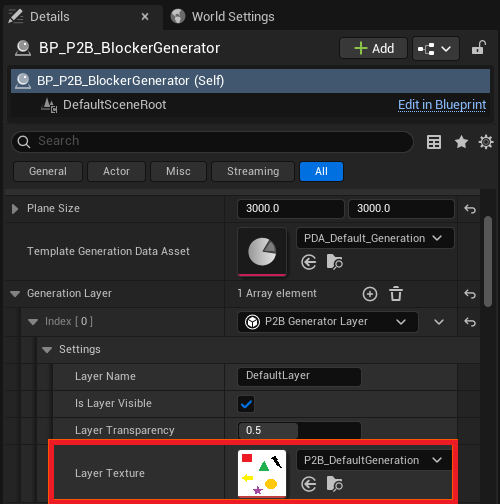
Before being able to generate any Blockers out of it, you will have to change a few settings.
- Change
MipGenSettingstoNoMipmaps - Change the
Compression SettingstoVectorDisplacementMap(this mode is used because there are 4 channels of 1 byte) - Change the
FiltertoNearest(not necessary, but advised)
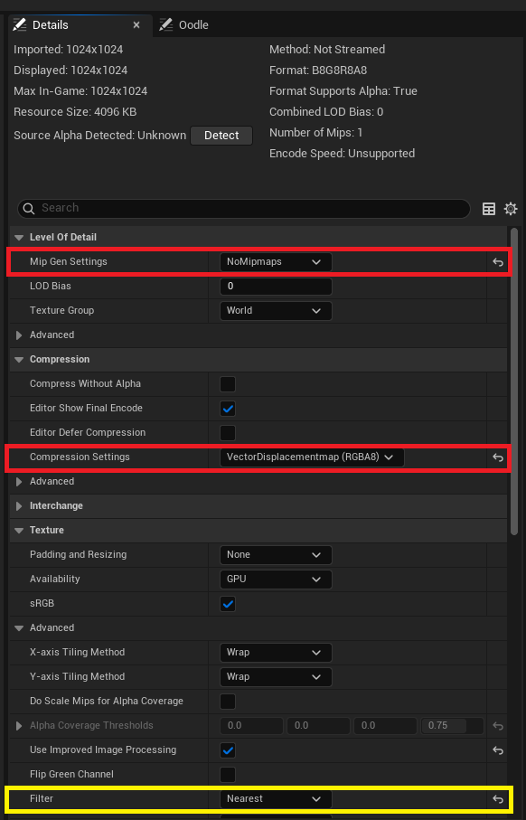
You can now generate the Blockers out of the texture, but be careful with the density of different colors. The current Template data asset will
try to generate a Blocker out of every shape of any color it finds (except white). To change this behavior, go to the Blocker DataAsset Tutorial.
Documentation built with Unreal-Doc v1.0.9 tool by PsichiX
Generation Data Assets
This tutorial will explain how to create a working environment for the drawing tool of the plugin. The setup will only depend on Data Assets,
which will provide generation information for the colors drawn on the textures.
Create PDA
Data asset creation in Unreal is a bit particular, as there are two ways to create it. You can:
- Create a
Blueprintof the DataAsset class to add new values, inherit properties, and preset it to your needs. - Create a
Packageabledata asset, which can only be edited and has no inheritance.
To make the BlockerGenerator work, you will need the second one:
- Right-click in the content viewer.
- In miscellaneous, select
DataAsset.
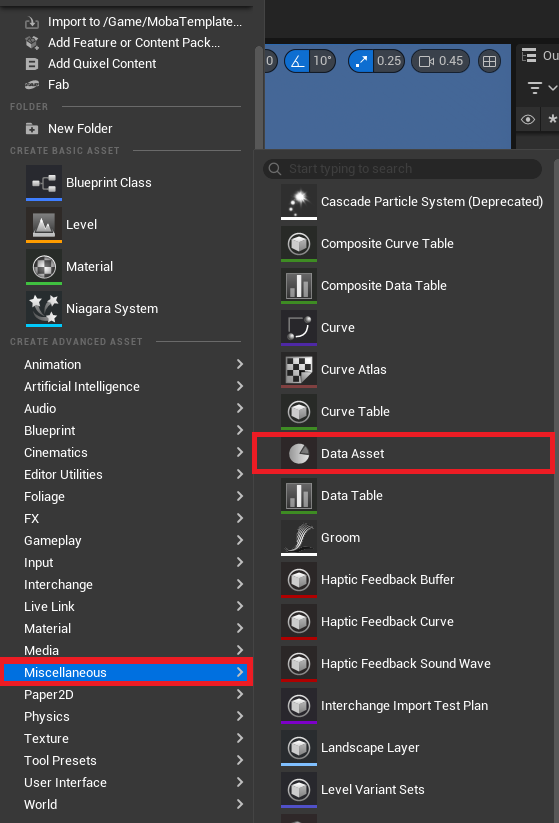
Now, you will have to select the class that you want to use to generate the Data Asset. The plugin has two main classes for generation:
UP2B_TemplateGeneration_DataAssetUP2B_BlockerGeneration_DataAsset
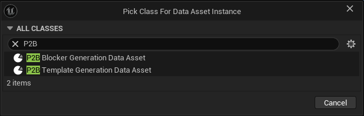
Template
The UP2B_TemplateGeneration_DataAsset holds a list of blocker presets and allows you to efficiently change what the BlockerGenerator will generate.
For example, you can have a PDA_Urban_Generation and a PDA_Forest_Generation.
Let's break down the parameters:
Template Generation Name, Displayed by the painting tool for color selection.Geometry Simplifier, Allows tweaking how the geometry is simplified during vertices extraction. Can be overridden in the Blockers data assets.Generate Blocker For Unregistered Color, Toggle this to generate a blocker for any color shape the generator finds. Be cautious with the texture in use, as the generator has no limits.Blockers Data Assets, An array holding other types of Data Assets that bind aColorto aBlocker.
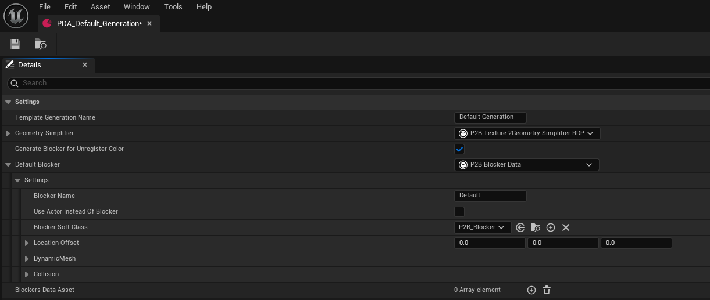
The default blocker settings will be explained in the Blockers DataAssets section. These settings define what the Blocker Generator will spawn.
Blocker
Fast setup
Before explaining how the UP2B_BlockerGeneration_DataAsset works, let's set up a working template. Create two Data Assets, one of each type:
UP2B_TemplateGeneration_DataAsset, The template holding theBlockersparameters, which you will callPDA_Tutorial_Generation.UP2B_BlockerGeneration_DataAsset, The color-to-blocker binding that will use the template. Let's createPDA_Wall_Blocker.
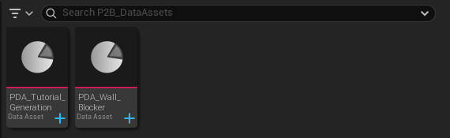
Now that both data assets are created, let's tweak the template first:
- Rename the
Template Generation NametoTutorial. - Disable
Generate Blocker For Unregistered Color. - Add
PDA_Wall_Blockerto theBlockers Data Assetsarray.
Now, for the blocker:
- Rename the
Blocker Generation NametoWall. - Add a new element to the
Color to Blocker. - Select any color except white and set the alpha to one.
- In the
Value, select theP2B Blocker Data. - Then, in the
Blocker Soft Class, selectP2B_Blocker.
This setup defines the PDA_Tutorial_Generation template to generate walls. The PDA_Wall_Blocker specifies that only one kind of wall can be spawned.
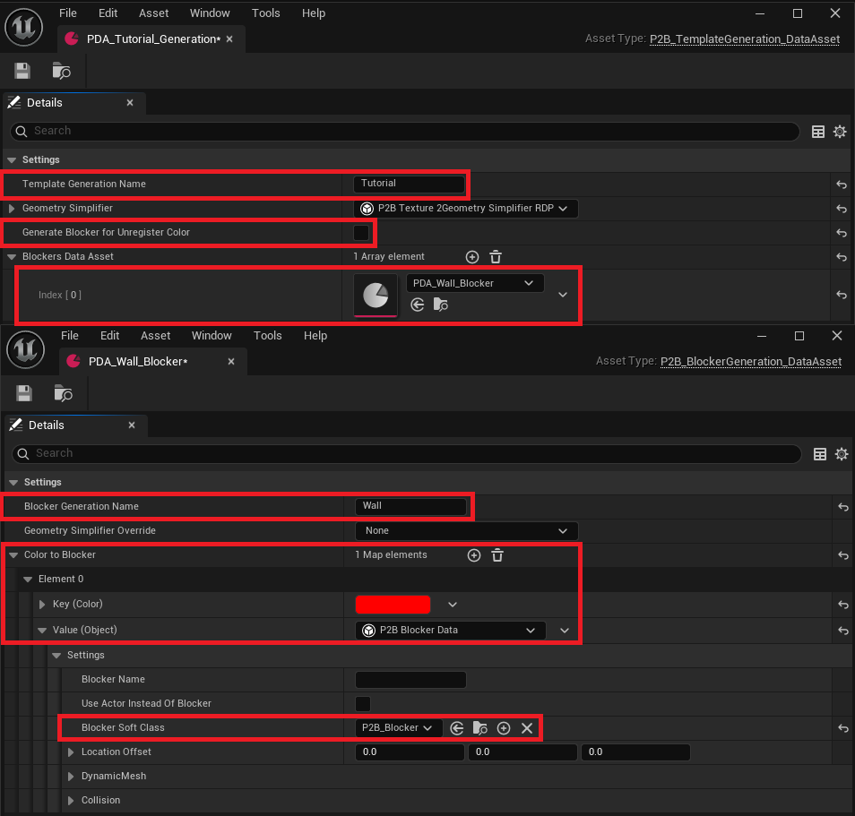
Select the Blocker Generator in the editor, go to the details panel, and change the Template Generation Data Asset to the one you've just created.
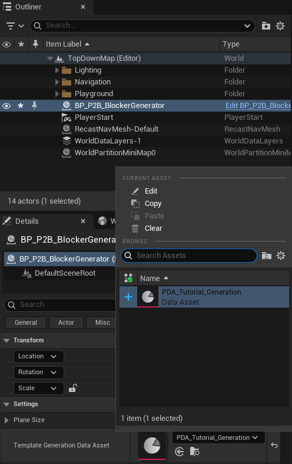
Finally, open the Paint 2 Blocking Mode, select paint, and you will see that you can select the Wall color to draw. You can simply click on it to update
the Paint Color brush.
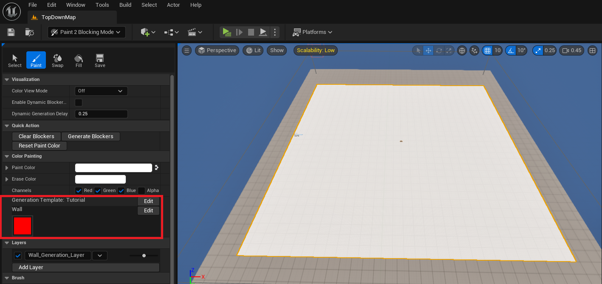
You can now define as many wall types as needed by adding a new element to Color to Blocker. I also recommend providing a name for each blocker using Blocker Name.
You can also create another type of blocker by creating a new UP2B_BlockerGeneration_DataAsset and registering it in the PDA_Tutorial_Generation template!
Blocker settings
Every color has a Blocker Data class associated with it. By default, P2B_Blocker_Data is used to generate basic geometry. This class can be overridden to add any number
of parameters needed by the Blocker. The default settings are limited and focus only on mesh generation and its location:
Blocker Name, Changes the name of the spawned blocker in the editor.Use Actor Instead Of Blocker, Allows the spawning of any actor. If the actor inherits fromP2B_Blocker_Interface, it will have access to theBlocker Data.Blocker Soft Class&Actor Soft Class, The asset spawned by theBlocker Generator.Location Offset, Offsets the actor's center location.Generate Dynamic Mesh, Toggles the 3D generation of the blocker.Override Texture Color, Uses another color for the 3D mesh instead of the color bound to theBlocker.ZExtend, Determines how much the 3D geometry will extend below and above the center. X moves downward, Y moves upward (use positive values only).Draw Wireframe, Draws the debug wireframe of the generated mesh.
Other values are straightforward and use the same names as the editor. The generator will simply apply them to the same parameters in the spawned actor.
Documentation built with Unreal-Doc v1.0.9 tool by PsichiX
Blockers
Blocker and Blocker Data can be created in both C++ and Blueprint. This tutorial will describe only the Blueprint implementation.
Once you understand Blueprint, implementing it in C++ should be straightforward.
Create Blocker
First, you will need to create two Blueprints inheriting from:
P2B_BlockerCall itBP_TutorialBlocker. This will be the object spawned by the generator when associated with a color.P2B_BlockerDataCall itBP_TutorialBlockerData. This will hold any custom data you preset in theDataAsset, which will then be sent to the associatedBlocker.
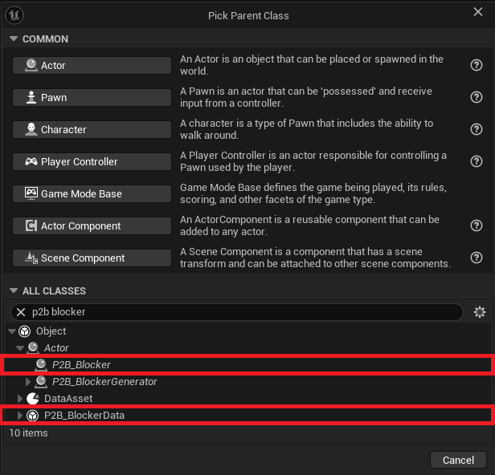
If you open BP_TutorialBlocker, you will have access to several overrideable functions that are called during Blocker generation.
The blocker is spawned in a deferred state to allow modifications before the construction script:
PreDynamicMeshGenerationCalled beforeFinish Spawnand before theDynamicMeshis generated.PostDynamicMeshGenerationCalled beforeFinish Spawnand after theDynamicMeshis generated.OnBlockerSpawnFinishedCalled afterFinish Spawn, when the construction script has been executed.
These functions provide access to the Blocker Data class that generated the Blocker. You can cast it to any type, and if the cast is valid, use the data it holds.
These functions are the core of customization, where you will add all your logic.
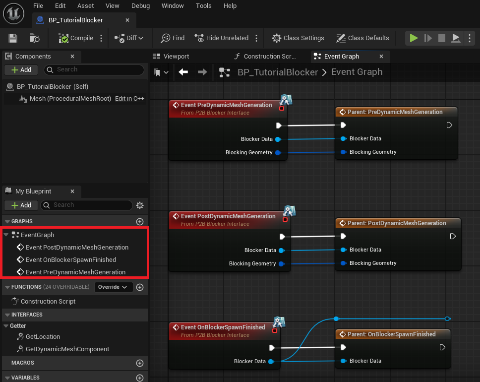
Next, open the Template Data Asset used by your Blocker Generator. This tutorial uses PDA_Default_Generation. Modify the following:
- Set
Default Blockerto the new data classBP_TutorialBlockerData. - Update
Blocker Soft Classin the settings toBP_TutorialBlocker.
If you hit generate, all blockers will now be of the type you've just created.
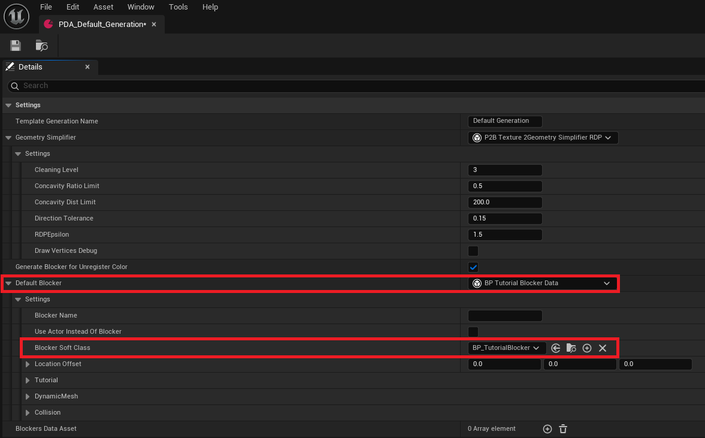
If you want only a specific color to generate this new blocker, simply create a new Blocker DataAsset, let's call it PDA_Tutorial_Blocker and add it to the list.
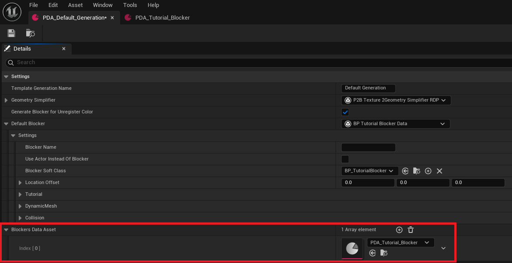
Open it and add two rows to the Color to Blocker section. This allows you to spawn two types of Tutorial_Blocker with different settings.
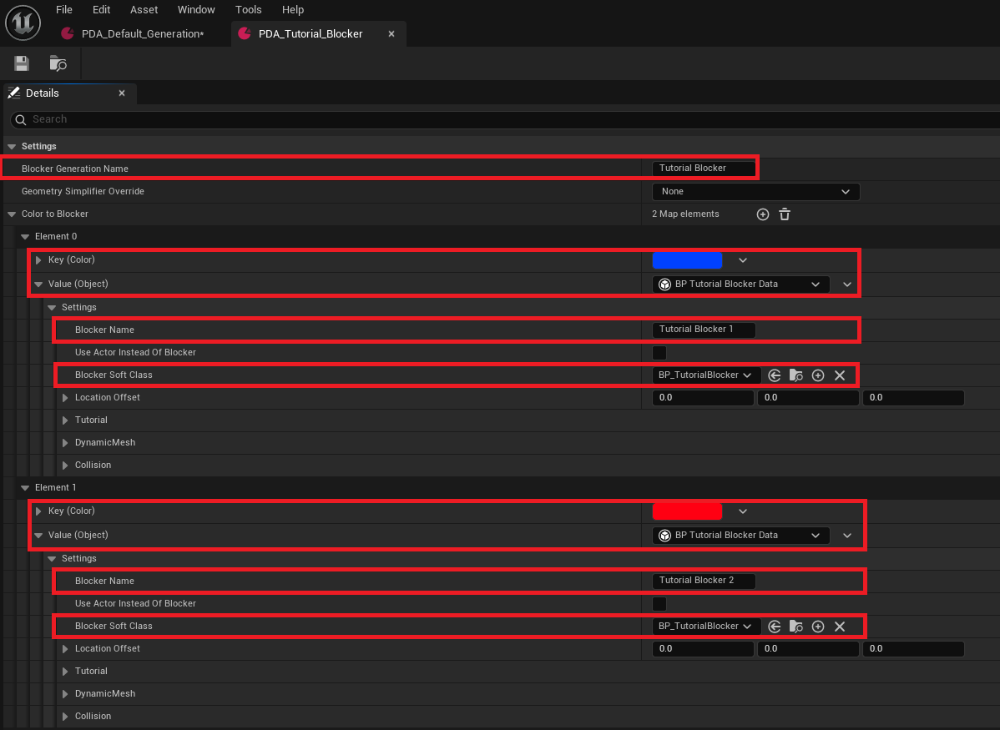
Finally, if you open Paint 2 Blocking Mode, you will see that the new blocker colors are available for drawing.
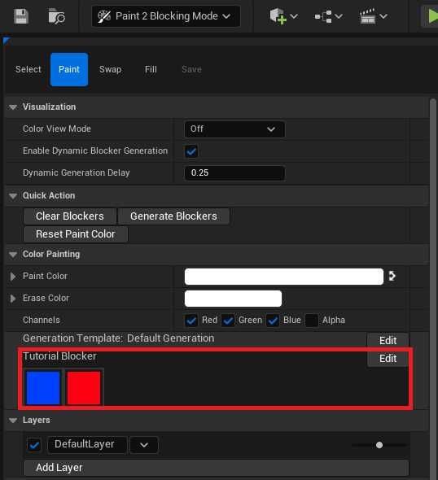
Use Case
Now that the custom Blocker is set up, let's see how to use it properly. The goal of the plugin is to generate blockers and iterate on game design quickly.
For this reason, a Blocker isn't just a 3D mesh with a collider, it can also have logic and play a role in gameplay.
For example, blockers can define cover areas, loot spawn zones, destructible barricades, etc.
Let's simulate a life system as an example. First, create a new component call it BP_LifeHandler_Component.
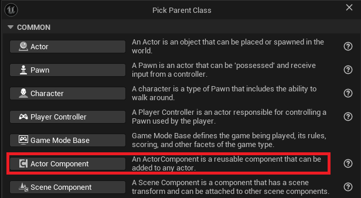
Open it and add a new variable: CurrentLife. I recommend assigning it a proper Category, such as Settings|Life.
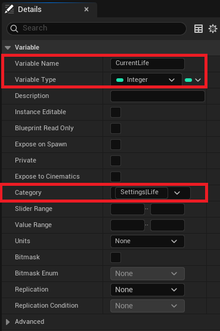
Next, open BP_TutorialBlockerData and do the same, add a new variable called BlockerLife, and set its Category to Settings|Life.
If you check the Class Default values, they should look like this:
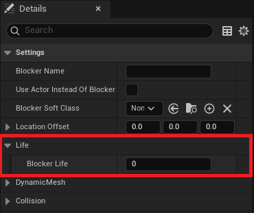
Now, open BP_TutorialBlocker, add the BP_LifeHandler_Component, and override PostDynamicMeshGeneration or OnBlockerSpawnFinished.
Don't forget to call the parent function.
Now, follow these steps:
- Cast
BlockerDatatoBP_TutorialBlockerData. - If the cast is valid:
- Get the
BlockerLifevalue from the data. - Set
CurrentLifeinBP_LifeHandler_Component.
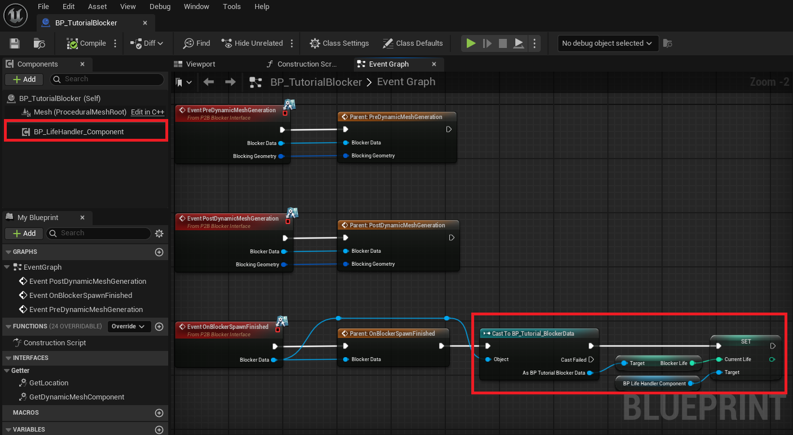
Finally, open PDA_Default_Generation or PDA_Tutorial_Blocker and set the blocker life values as needed.
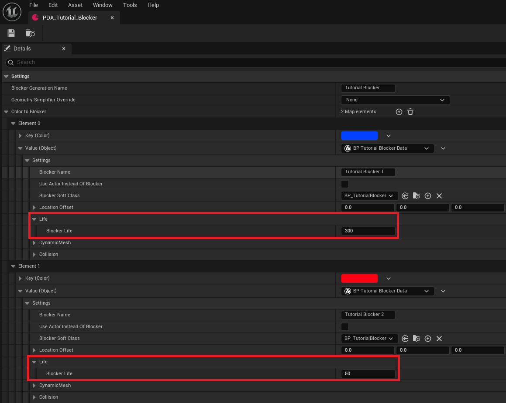
Now, when you paint different blockers, they will have different life values. This example is simplified and lacks logic for gameplay, but it's easy to imagine a real system with targets and health mechanics.
Custom Tooltip
Blocker Data is directly linked to Paint 2 Blocker Mode, meaning you can pass information between them.
When this mode is open, hovering over a Color Preset will display a tooltip. You can add custom information to this tooltip
by overriding GenerateParametersTooltip in the BlockerData class.
For example, to display the BlockerLife parameter in the tooltip:
- Override
GenerateParametersTooltipand call the parent function. - Create a local array variable and name it
Tooltip. - Add an element to the array with
ParameterNameand the value ofCurrentLife. - Return the
Tooltipvariable.
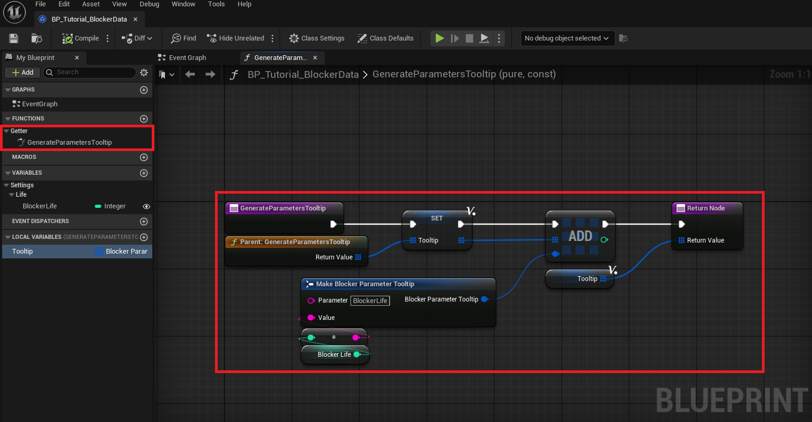
Open Paint 2 Blocker Mode and hover over a color. The tooltip should now display the BlockerLife.
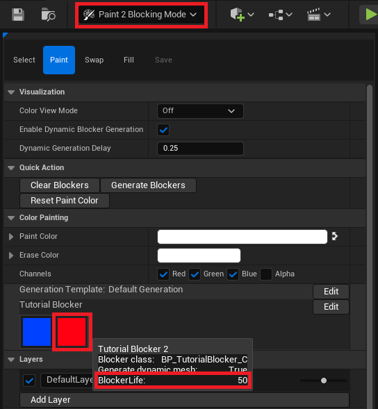
Documentation built with Unreal-Doc v1.0.9 tool by PsichiX
FOW P2B Bridge
Temporary documentation
The Bridge comes with a few Blocker classes, allowing the Blocker Generator to spawn assets related to the LFOW. You can try them
by using the premade template and texture present in the plugin Content folder.
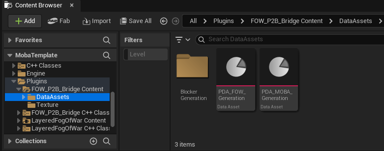
In your Blocker Generator, change the:
Template Generation Data Assetto thePDA_MOBA_GenerationtemplateLayer Textureto theMOBA_TemplateMapGenerationtexture
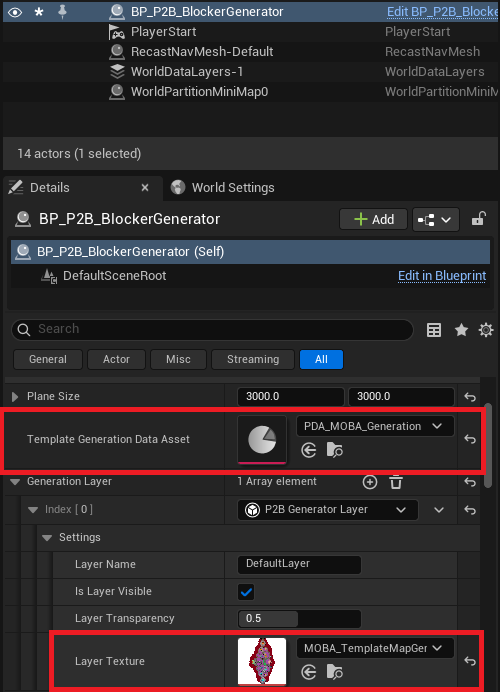
You can now hit the generate button or start painting ! :)
Documentation built with Unreal-Doc v1.0.9 tool by PsichiX
Paint 2 Blocking versions
Here is list of version pushed to the market place.
/!\ The links under apparently don't work, I'm trying to figure it out, please use the links on the left
Pages
Documentation built with Unreal-Doc v1.0.9 tool by PsichiX
Paint2Blocking V1.0.0
Version still in development
Documentation built with Unreal-Doc v1.0.9 tool by PsichiX
C++ API Reference
Documentation built with Unreal-Doc v1.0.9 tool by PsichiX